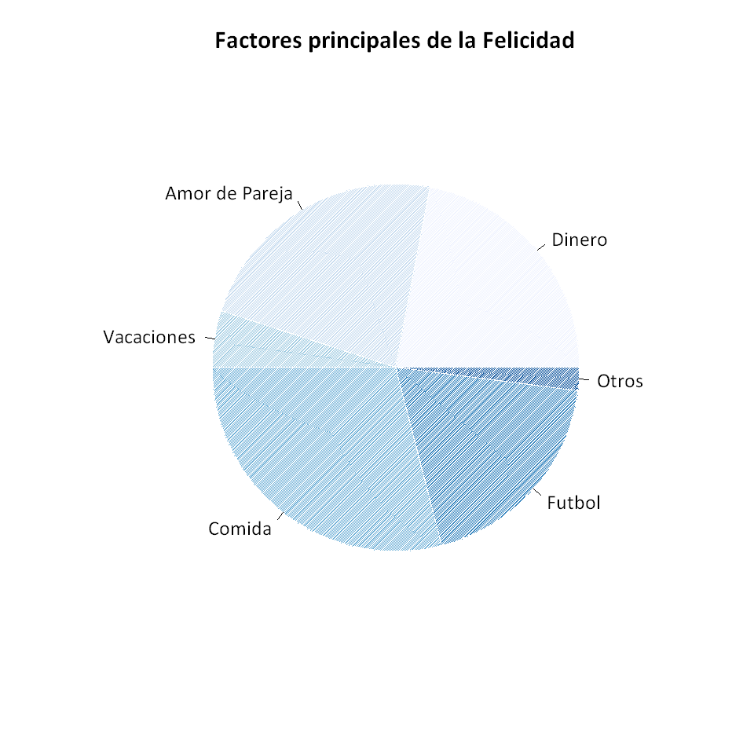
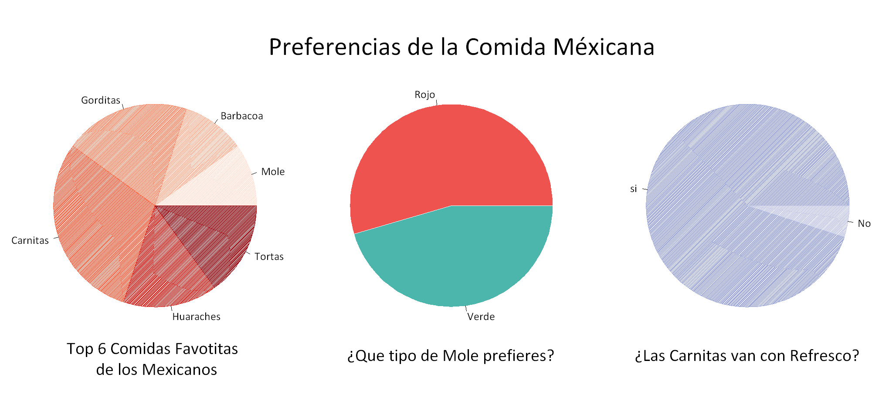

🍞 Pie Chart
🍞 Pie Chart#
library(RColorBrewer)
source("help.r")
Vamos a inventar a algunos datos que signifiquen la felicidad de las personas
felicidad <- c(22, 23, 5, 29, 19,2)
names(felicidad) <- c("Dinero","Amor de Pareja","Vacaciones","Comida","Futbol","Otros")
dim.plot(8, 8)
pie(felicidad, cex = 1.3, col = brewer.pal(length(felicidad) , "Blues"), radius = 0.7,
border = "#ffffff", density = 100, main = "Factores principales de la Felicidad", cex.main = 1.6)

dim.plot(17, 8)
par(mfrow = c(1, 3))
comida <- c( 10, 10, 20, 30, 15, 15 )
names(comida) <- c("Mole","Barbacoa","Gorditas","Carnitas","Huaraches","Tortas")
Mole <- c(60,50)
names(Mole) <- c("Rojo","Verde")
Carnitas <- c(95, 5)
names(Carnitas) <- c("si","No")
pie(comida, radius = 2.4, cex = 2, col = brewer.pal(length(comida) , "Reds"), density = 150)
mtext("Top 6 Comidas Favotitas \n de los Mexicanos", side = 1, cex = 2, line = -2)
mtext("Preferencias de la Comida Méxicana", side = 3, adj = -1.8, outer = F, cex = 3, line = -4)
pie(Mole, radius = 2.4, cex = 2, col = c("#EF5350", "#4DB6AC" ), angle = -45, border = "white")
mtext("¿Que tipo de Mole prefieres?", side = 1, cex = 2, line = -4)
pie(Carnitas, radius = 2.4, cex = 2 , col = c("#9FA8DA","#C5CAE9"), density = 150)
mtext("¿Las Carnitas van con Refresco?", side = 1, cex = 2, line = -4)
